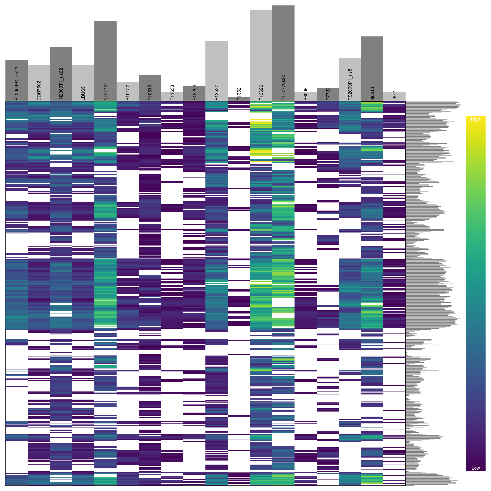
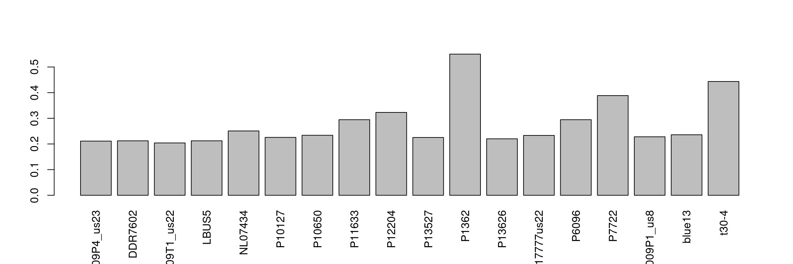
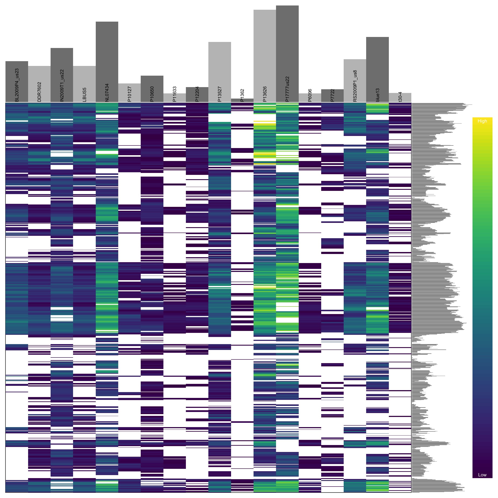
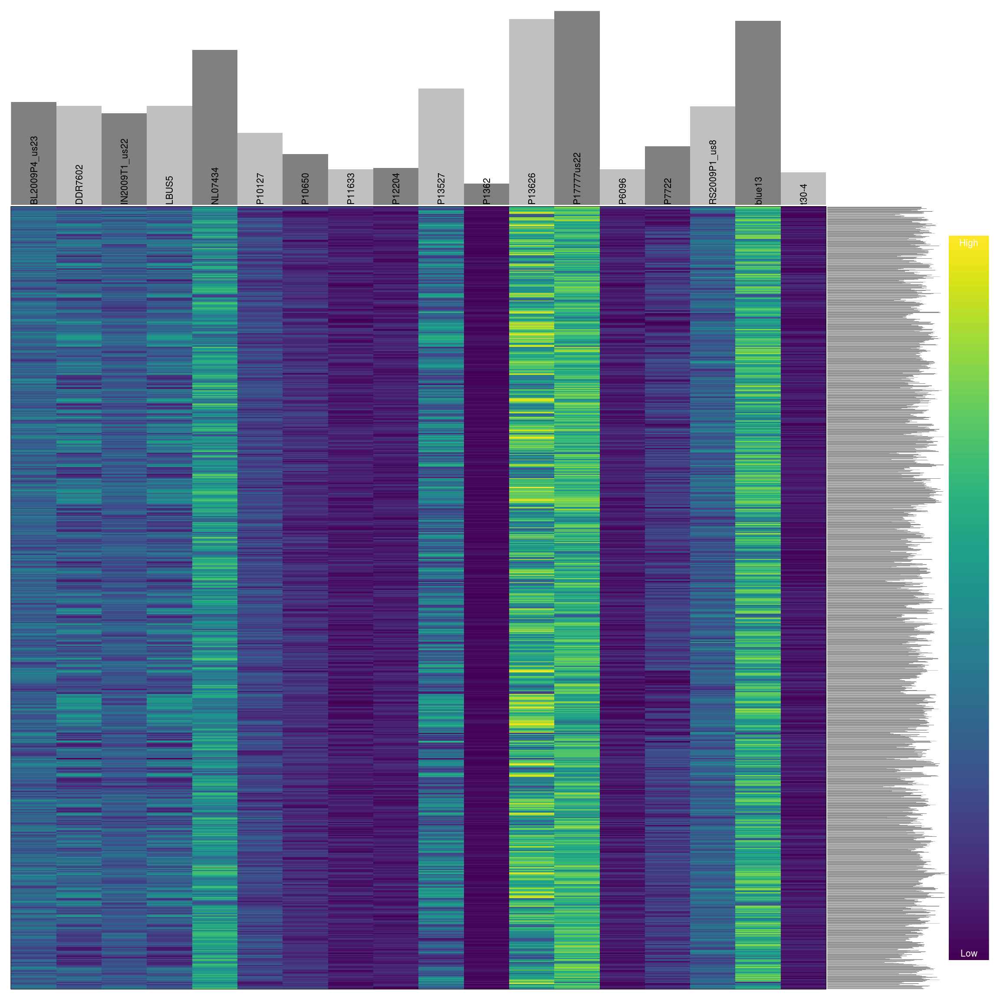

In the section on depth we learned how we can visualize variant depth, or any other numeric value provided in the gt portion of VCF data. In the section on censoring data we learned how to rescore variants that were outside our acceptance threshold as missing. And in the section on missing data we learned how to quantify and visualize missingness in our dataset. Here we put all of these skills together in order to omit samples and variants that have been set as missing (NA).
library(vcfR)
library(pinfsc50)
#data(vcfR_example)
vcf <- system.file("extdata", "pinf_sc50.vcf.gz", package = "pinfsc50")
vcf <- vcfR::read.vcfR(vcf)
dp <- extract.gt(vcf, element = "DP", as.numeric=TRUE)vcf## ***** Object of Class vcfR *****
## 18 samples
## 1 CHROMs
## 22,031 variants
## Object size: 20.9 Mb
## 7.929 percent missing data
## ***** ***** *****Because part of this exercise involves setting cells in our data matrix as NA we should begin by reminding ourselves of how abundant they are. By using the show method we see that we have 7.93 percent missing data. We can now use what we learned previously to set variants that are outside our per sample inclusion threshold as NA.
quants <- apply(dp, MARGIN=2, quantile, probs=c(0.1, 0.9), na.rm=TRUE)
dp2 <- sweep(dp, MARGIN=2, FUN = "-", quants[1,])
dp[dp2 < 0] <- NA
dp2 <- sweep(dp, MARGIN=2, FUN = "-", quants[2,])
dp[dp2 > 0] <- NA
dp[dp < 4] <- NA
vcf@gt[,-1][ is.na(dp) == TRUE ] <- NAvcf## ***** Object of Class vcfR *****
## 18 samples
## 1 CHROMs
## 22,031 variants
## Object size: 19.2 Mb
## 27.7 percent missing data
## ***** ***** *****We see that this censoring has increased the degree of missingness in our matrix to 27.7 percent. Ideally we should visualize the results of this action. For brevity, we will not here. But you can return to the section on depth and reuse the code presented there to visualize how this change has affected the distribution of the data. One way to visualize these data is to use a heatmap.
heatmap.bp(dp[1:1000,], rlabels = FALSE)
We can see that some samples have a high degree of missingness. By omitting these samples we may reduce the overall missingness in the data set. We accomplish this by using the function is.na() in conjunction with apply() to determine each samples degree of missingness and use this information to omit samples below a threshold. We can then visualize this change with another heatmap.
myMiss <- apply(dp, MARGIN = 2, function(x){ sum( is.na(x) ) } )
myMiss <- myMiss / nrow(dp)
barplot(myMiss, las = 3)
vcf@gt <- vcf@gt[, c(TRUE, myMiss < 0.6)]
vcf## ***** Object of Class vcfR *****
## 18 samples
## 1 CHROMs
## 22,031 variants
## Object size: 19.2 Mb
## 27.7 percent missing data
## ***** ***** *****dp <- extract.gt(vcf, element = "DP", as.numeric=TRUE)
heatmap.bp(dp[1:1000,], rlabels = FALSE)
Previously we have seen how to quantify and visualize missingness for variants in our dataset. We can use this information to omit variants that have a high degree of missingness similar to how we treated the samples.
myMiss <- apply(dp, MARGIN = 1, function(x){ sum( is.na(x) ) } )
myMiss <- myMiss / ncol(dp)
#vcf <- vcf[myMiss < 0.2, ]
vcf <- vcf[myMiss < 0.05, ]
vcf## ***** Object of Class vcfR *****
## 18 samples
## 1 CHROMs
## 2,190 variants
## Object size: 2.7 Mb
## 0 percent missing data
## ***** ***** *****dp <- extract.gt(vcf, element = "DP", as.numeric=TRUE)
heatmap.bp(dp, rlabels = FALSE)
When we are happy with our changes we can save our production data using the function write.vcf.
write.vcf(vcf, file = "pinfsc50_filtered.vcf.gz")
#write.vcf(vcf, "pinfsc50_qc.vcf.gz")Through omitting samples and variants with a high degree of missingness we have taken a dataset that had a large fraction of questionable data and subset it on the fraction of the data we feel is of high quality. How important any particular sample or variant is will have to be determined base on the specifics of any particular project. Through exploring thresholds that are different from those implemented here one may be able to improve on this more. We can now proceed to downstream analyses of this dataset with greater confidence that the variants we are analyzing are of high quality.